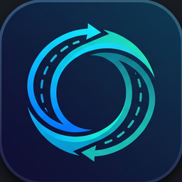
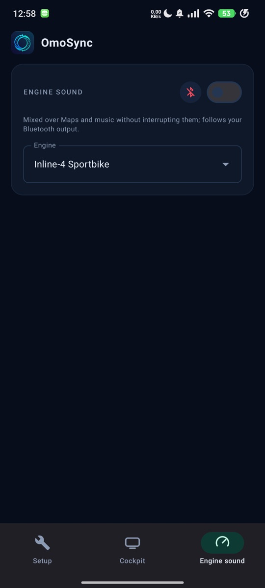

OmoSyncAndroid Auto di layar cockpit motormu
Android Auto on your motorcycle's cockpit screen
OmoSync menampilkan Android Auto pas di layar lebar 1920×720 OMOWAY OMO X. Ada juga suara mesin prosedural yang bercampur dengan Spotify dan Maps tanpa memotongnya.
OmoSync shows Android Auto laid out for the OMOWAY OMO X's wide 1920×720 screen, plus a procedural engine sound that mixes with Spotify and Maps without interrupting them.
Tangkapan layar
Screenshots



Fitur
Features
Android Auto pas 1920×720
Android Auto at 1920×720
OmoSync menjadi head unit bagi Android Auto di HP, jadi UI mobilnya digambar khusus untuk layar lebar.
OmoSync acts as the head unit for Android Auto on the phone, so the car UI is drawn for the wide screen.
Kontrol dari HP
Controlled from the phone
Layar motor tidak bisa disentuh. Android Auto dioperasikan lewat pratinjau sentuh atau controller layar penuh di HP.
The bike screen has no touchscreen. Operate Android Auto through a touch preview or a full-screen controller on the phone.
Suara mesin
Engine sound
Sebelas preset sintesis (inline-4, crossplane, V4, triple, twin, single, 2-tak, turbin, …) dengan gearbox virtual, dari GPS atau slider simulasi.
Eleven synthesized presets (inline-4, crossplane, V4, triple, twin, single, two-stroke, turbine, …) with a virtual gearbox, driven by GPS or a simulation slider.
Langsung ke motor OMO X
Straight to the OMO X
Wi-Fi Direct ke layar motor, protokol yang sama dengan aplikasi OMOWAY. Internet HP tetap lewat seluler.
Wi-Fi Direct to the bike's screen, same protocol as the OMOWAY app. The phone's internet stays on cellular.
Pengaturan awal
First-time setup
Tab Setup terbuka sendiri saat aplikasi baru dipasang dan memeriksa setiap langkah; ia muncul lagi bila ada langkah wajib yang hilang (mis. head unit server setelah HP restart).
The Setup tab opens by itself on a fresh install and checks each step; it comes back whenever a required step is missing again (e.g. the head unit server after a phone restart).
- Pasang APKInstall the APK Unduh di HP, izinkan pemasangan dari browser. Kalau Play Protect bertanya, pilih "Install anyway". Download on the phone and allow installs from the browser. If Play Protect asks, choose "Install anyway".
- Android Auto terpasangAndroid Auto installedwajibrequired Pasang atau perbarui Android Auto dari Play Store. Install or update Android Auto from the Play Store.
- Developer mode + head unit serverDeveloper mode + head unit serverwajibrequired Pengaturan Android Auto → ketuk "Version" ±10 kali → ⋮ → "Start head unit server". Ulangi "Start head unit server" setiap kali HP restart. Android Auto settings → tap "Version" about 10 times → ⋮ → "Start head unit server". Repeat "Start head unit server" after every phone restart.
- Get keysGet keyswajibrequired Mengunduh sertifikat contoh dari proyek open-source Open Headunit dan memeriksa sidik jarinya. Sertifikat hanya disimpan di dalam aplikasi. Downloads the sample certificate of the open-source Open Headunit project and checks its fingerprint. It is kept inside the app only.
- Izin notifikasiNotificationswajibrequired Supaya layanan OmoSync tetap berjalan di latar belakang. Keeps the OmoSync service running in the background.
- Baterai Android Auto: No restrictionsAndroid Auto battery: No restrictionsdisarankanrecommended Xiaomi/HyperOS: tombol di aplikasi langsung membuka "Background settings" Android Auto. Setelah itu tekan "I've done this". Xiaomi/HyperOS: the button opens Android Auto's "Background settings" directly. Then tap "I've done this".
- Xiaomi: Autostart Android AutoXiaomi: Autostart for Android Autodisarankanrecommended Security → Autostart → aktifkan Android Auto, lalu tekan "I've done this". Security → Autostart → enable Android Auto, then tap "I've done this".
Coba tanpa motor: simulator di Mac/PC
Try without the bike: simulator on Mac/PC
Unduh omosync-simulator-0.4.8.zip dari halaman rilis, ekstrak, lalu jalankan (butuh Node.js 18+):
Download omosync-simulator-0.4.8.zip from the releases page, unzip it and run (needs Node.js 18+):
cd omosync-simulator npm install npm start # or: PORT=8090 npm start
Buka http://localhost:8080 di Chrome. Sambungkan HP dan komputer ke Wi-Fi yang sama. Di OmoSync, tab Cockpit: di kartu Head unit pilih Mac/PC simulator, tekan Find simulator on Wi-Fi, lalu Connect; setelah tersambung tekan Start Android Auto.
Open http://localhost:8080 in Chrome. Put the phone and the computer on the same Wi-Fi. In OmoSync's Cockpit tab, in the Head unit card choose Mac/PC simulator, tap Find simulator on Wi-Fi, then Connect; once connected tap Start Android Auto.
Dukung OmoSync
Support OmoSync
OmoSync gratis dan tanpa iklan.
Kalau aplikasi ini berguna di motormu, kamu bisa traktir kopi lewat Saweria. Dukunganmu membantu pengembangan dan pengujian fitur berikutnya.
OmoSync is free and has no ads.
If it helps on your bike, you can buy me a coffee on Saweria. Your support goes into building and testing the next features.
FAQ
UmumGeneral· 4
Apa itu OmoSync dan apa yang dibutuhkan?What is OmoSync and what do I need?
OmoSync menampilkan Android Auto (atau layar HP) di layar cockpit OMOWAY OMO X lewat Wi-Fi, dan menambahkan suara mesin sintesis. Yang dibutuhkan: HP Android 10+ dengan aplikasi Android Auto, dan motor OMO X. Tanpa root, tanpa kabel, tanpa modifikasi motor. Untuk mencoba tanpa motor ada simulator Mac/PC.
OmoSync shows Android Auto (or your phone screen) on the OMOWAY OMO X cockpit screen over Wi-Fi, and adds a synthesized engine sound. You need an Android 10+ phone with the Android Auto app and an OMO X. No root, no cable, no changes to the bike. There is a Mac/PC simulator to try it without the bike.
Apakah ini mengubah firmware motor atau berbahaya?Does it modify the bike's firmware or is it risky?
Tidak. OmoSync tidak menyentuh firmware. Ia hanya berbicara ke layar motor lewat Wi-Fi Direct dengan protokol yang sama dengan aplikasi OMOWAY saat menampilkan navigasi: mengirim gambar dan status tampilan, tidak mengirim perintah lain ke kendaraan. Kunci/buka kunci motor tetap lewat aplikasi OMOWAY.
No. OmoSync never touches the firmware. It only talks to the bike's screen over Wi-Fi Direct using the same protocol the OMOWAY app uses to show navigation: it sends the picture and display status, nothing else to the vehicle. Locking and unlocking stay with the OMOWAY app.
Apakah ini aplikasi resmi OMOWAY atau Google?Is this an official OMOWAY or Google app?
Bukan. OmoSync proyek pribadi yang eksperimental, tanpa garansi, dan tidak berafiliasi dengan OMOWAY maupun Google. Pakai dengan tanggung jawab sendiri dan operasikan hanya saat berhenti.
No. OmoSync is a personal, experimental project with no warranty and no affiliation with OMOWAY or Google. Use it at your own risk and operate it only while stopped.
Kenapa tidak ada di Play Store?Why isn't it on the Play Store?
Aplikasi ini memakai fitur developer Android Auto (head unit server) dan protokol layar OMO X hasil analisis sendiri, jadi dibagikan langsung di sini. Setiap rilis ditandatangani dengan kunci yang sama dan disertai SHA-256. Kalau Play Protect bertanya, pilih Install anyway.
It relies on Android Auto's developer feature (the head unit server) and a self-analysed OMO X screen protocol, so it is distributed here. Every release is signed with the same key and comes with its SHA-256. If Play Protect asks, choose Install anyway.
SetupSetup· 3
Apa saja langkah setupnya?What are the setup steps?
Tab Setup memandu dan memeriksanya: (1) Android Auto terpasang; (2) mode developer Android Auto + Start head unit server; (3) Get keys; (4) izin notifikasi; dianjurkan: (5) Android Auto tanpa batasan baterai dan (6) Autostart di Xiaomi/HyperOS. Setelah selesai, tekan Lanjut ke OmoSync.
The Setup tab walks you through and checks them: (1) Android Auto installed; (2) Android Auto developer mode + Start head unit server; (3) Get keys; (4) notification permission; recommended: (5) Android Auto without battery restrictions and (6) Autostart on Xiaomi/HyperOS. Then tap Continue to OmoSync.
Apa itu "head unit keys" dan kenapa harus diunduh?What are the "head unit keys" and why download them?
Android Auto hanya mau bicara dengan head unit yang punya sertifikat. OmoSync mengunduh sertifikat contoh dari proyek open-source Open Headunit (dari GitHub, versi yang dikunci dan sidik jarinya diverifikasi) dan menyimpannya di penyimpanan privat aplikasi. Tidak ada data yang dikirim ke mana pun. Kalau punya sertifikat PKCS#12 sendiri, bisa dipakai lewat tab Cockpit → Lanjutan.
Android Auto only talks to head units that present a certificate. OmoSync downloads the sample certificate of the open-source Open Headunit project (a pinned version from GitHub, fingerprint verified) into the app's private storage. Nothing is sent anywhere. Your own PKCS#12 certificate can be used instead via Cockpit → Advanced.
Harus mengulang sesuatu setelah HP restart?Do I have to repeat anything after a phone restart?
Ya, Start head unit server di Android Auto mati setiap HP restart. OmoSync mendeteksinya dan membuka tab Setup lagi dengan tombol yang langsung membuka pengaturan Android Auto.
Yes: Android Auto's Start head unit server stops at every reboot. OmoSync notices and opens the Setup tab again with a button that jumps straight to Android Auto's settings.
PenggunaanUsing it· 6
Bagaimana urutan menampilkan di motor?How do I get it on the bike's screen?
(1) Nyalakan/buka kunci motor lewat aplikasi OMOWAY, lalu force stop aplikasi itu — motor hanya melayani satu HP. (2) Di tab Cockpit, kartu Head unit: pilih OMO X bike, tekan Find, pilih layar OMO-…, lalu Connect (lain kali cukup Connect). (3) Setelah tersambung, tekan Start Android Auto; tombol ini baru aktif saat head unit tersambung. (4) Di motor buka layar Navigasi: Start Navigation di layar READY, atau ikon empat titik dua kali lalu joystick ke kiri. Gambar tampil di area peta layar itu.
(1) Start/unlock the bike with the OMOWAY app, then force-stop that app — the bike serves one phone at a time. (2) In the Cockpit tab's Head unit card choose OMO X bike, tap Find, pick the OMO-… screen, then Connect (next time just Connect). (3) Once connected tap Start Android Auto; it is only enabled while a head unit is connected. (4) On the bike open the Navigation screen: Start Navigation on the READY screen, or the four-dot icon twice then joystick left. The picture fills the map area of that screen.
Layar motor tidak bisa disentuh — bagaimana mengendalikan Android Auto?The bike screen has no touch — how do I control Android Auto?
Dari HP: sentuh pratinjau di tab Cockpit, pakai D-pad (atas/bawah/kiri/kanan, Select, Back), atau buka Full screen untuk controller layar penuh. Tombol paling bawah di rel kanan Android Auto berpindah antara peta dan daftar aplikasi. Lakukan saat berhenti.
From the phone: touch the preview in the Cockpit tab, use the D-pad (up/down/left/right, Select, Back), or open Full screen for a full-screen controller. The bottom button on Android Auto's right-hand rail switches between the map and the app list. Do this while stopped.
Bagaimana supaya suara keluar di motor?How do I get sound on the bike?
Layar motor hanya menerima gambar. Suara (navigasi, musik, mesin) keluar lewat speaker HP, helm Bluetooth, atau Bluetooth motor (omo-…). Untuk speaker motor, sambungkan dari Settings → Bluetooth dengan Media audio aktif; OmoSync tidak bisa menyambungkannya sendiri, tetapi kartu Head unit menunjukkan ke mana suara sedang keluar.
The bike screen only receives the picture. Sound (navigation, music, engine) plays through the phone, a Bluetooth helmet, or the bike's Bluetooth (omo-…). For the bike's speakers, connect it from Settings → Bluetooth with Media audio on; OmoSync cannot connect it by itself, but the Head unit card shows where sound currently goes.
Apa bedanya "Android Auto" dan "Phone screen"?What is the difference between "Android Auto" and "Phone screen"?
Android Auto: OmoSync menjadi head unit, jadi Maps, Spotify, dll. digambar khusus untuk layar lebar motor dan bisa dikendalikan dengan D-pad. Phone screen: layar HP di-mirror apa adanya (butuh izin perekaman layar) — berguna untuk aplikasi yang tidak ada di Android Auto, tetapi tidak ada kontrol dari OmoSync.
Android Auto: OmoSync acts as the head unit, so Maps, Spotify and friends are drawn for the bike's wide screen and can be driven with the D-pad. Phone screen: the phone's display is mirrored as is (needs screen-capture permission) — handy for apps that are not on Android Auto, but there are no controls from OmoSync.
Bagaimana suara mesin bekerja?How does the engine sound work?
Di tab Engine sound: pilih salah satu dari sebelas preset (inline-4, crossplane, V4, triple, twin 270°, V-twin, single, big single, 2-tak, turbin, skuter listrik), atur volume, dan pilih sumber kecepatan: GPS saat berkendara atau Slider untuk mencoba. Suaranya disintesis (bukan rekaman) dengan gearbox virtual, dan dicampur di atas Maps/musik tanpa memotongnya.
In the Engine sound tab pick one of eleven presets (inline-4, crossplane, V4, triple, 270° twin, V-twin, single, big single, two-stroke, turbine, quiet electric scooter), set the volume and choose the speed source: GPS while riding or the Slider to try it. The sound is synthesized (not recorded) with a virtual gearbox and mixed over Maps/music without interrupting them.
Bisa dicoba tanpa motor?Can I try it without the bike?
Ya, lewat simulator Mac/PC di atas. Tampilannya meniru layar OMO X (HUD, area aman) dan mendukung sentuh dari browser. Diskusi/uji coba selain itu tidak membutuhkan motor sama sekali.
Yes, with the Mac/PC simulator above. It mimics the OMO X screen (HUD, safe area) and forwards touches from the browser. Everything except the final step can be tested without the bike.
MasalahTroubleshooting· 5
Tidak bisa tersambung ke motor / layar tidak munculCan't connect to the bike / nothing shows
Periksa: aplikasi OMOWAY sudah di-force stop (motor menolak HP kedua dengan status busy); motor menyala dan layarnya aktif; izin Nearby devices diberikan; di motor sedang di layar Navigasi — di layar lain video tidak digambar. Kalau masih gagal, Disconnect lalu Find ulang, atau Forget this bike di Lanjutan.
Check: the OMOWAY app is force-stopped (the bike refuses a second phone as busy); the bike is on with its screen awake; the Nearby devices permission is granted; the bike is on its Navigation screen — other screens never draw the video. If it still fails, Disconnect, Find again, or Forget this bike under Advanced.
Layar Android Auto hitam atau macet di logoAndroid Auto is black or stuck on the logo
Hentikan paksa Android Auto (App info → Force stop), jalankan lagi Start head unit server, lalu Start Android Auto di OmoSync. Jangan jalankan scrcpy dengan video bersamaan karena ia memakai encoder yang sama (scrcpy --no-video aman). Pastikan Android Auto bebas batasan baterai.
Force-stop Android Auto (App info → Force stop), run Start head unit server again, then Start Android Auto in OmoSync. Don't run scrcpy with video at the same time, it uses the same encoder (scrcpy --no-video is fine). Make sure Android Auto has no battery restrictions.
Jam, baterai, atau kecepatan motor menutupi gambarThe bike's clock, battery or speed overlaps the picture
Firmware motor menggambar HUD-nya di atas video dan itu tidak bisa dimatikan. OmoSync menata Android Auto di dalam area aman (default: 120 px kanan, 36 px bawah dari 960×360). Kalau di motormu masih tertutup, ubah nilainya di Cockpit → Lanjutan → Keep clear of the bike's HUD.
The bike's firmware draws its HUD over the video and that cannot be switched off. OmoSync lays Android Auto out inside a safe area (default: 120 px right, 36 px bottom of 960×360). If something is still covered on your bike, adjust the values under Cockpit → Advanced → Keep clear of the bike's HUD.
Gambar patah-patah atau tertundaThe picture stutters or lags
Di Cockpit → Lanjutan turunkan Stream quality (2–10 Mbps) atau pakai 30 fps. Jauhkan HP dari sumber gangguan Wi-Fi dan pastikan HP tidak dalam mode hemat daya. Untuk simulator, Wi-Fi 5 GHz jauh lebih lancar.
Under Cockpit → Advanced lower the Stream quality (2–10 Mbps) or use 30 fps. Keep the phone away from Wi-Fi interference and out of battery-saver mode. For the simulator, 5 GHz Wi-Fi is much smoother.
Update dari versi lamaUpdating from an older version
Pasang APK baru di atas yang lama; pengaturan tetap tersimpan. Hanya build debug buatan sendiri yang harus di-uninstall dulu karena tanda tangannya berbeda.
Install the new APK over the old one; your settings are kept. Only self-built debug builds must be uninstalled first because their signature differs.
TeknisTechnical· 3
Bagaimana cara kerjanya di dalam?How does it work under the hood?
OmoSync menjalankan klien protokol head unit Android Auto ke head unit server di HP yang sama (TLS lokal), menerima video H.264 dan mengirim sentuhan/tombol. Gambar itu dipotong ke area aman dan di-encode ulang menjadi H.264 High 960×360, lalu dikirim ke motor lewat Wi-Fi Direct (motor sebagai group owner; kanal kontrol dan video TCP terpisah) persis seperti aplikasi OMOWAY. Internet HP tetap lewat seluler.
OmoSync runs an Android Auto head-unit protocol client against the head unit server on the same phone (local TLS), receiving H.264 video and sending touches/keys. That picture is cropped to the safe area, re-encoded as H.264 High 960×360 and sent to the bike over Wi-Fi Direct (bike as group owner; separate TCP control and video channels) exactly like the OMOWAY app. The phone's internet stays on cellular.
Data apa yang dikumpulkan?What data is collected?
Tidak ada. OmoSync tidak punya server dan tidak mengirim data apa pun; satu-satunya akses internet adalah mengunduh sertifikat head unit dari GitHub. Lokasi dipakai hanya di HP untuk kecepatan GPS suara mesin, dan izin Nearby devices untuk menemukan layar motor.
None. OmoSync has no server and sends nothing anywhere; its only internet access is downloading the head-unit certificate from GitHub. Location is used on the phone only for GPS speed of the engine sound, and Nearby devices to find the bike's screen.
Berapa pemakaian baterai dan kuota?What about battery and data usage?
Wi-Fi Direct ke motor tidak memakai kuota; Maps dan musik memakai data seperti biasa. Encoding video adalah beban terbesar — 30 fps dan bitrate lebih rendah menghemat baterai. Saat berkendara jauh, HP sebaiknya di-charge.
Wi-Fi Direct to the bike uses no mobile data; Maps and music use data as usual. Video encoding is the biggest load — 30 fps and a lower bitrate save battery. Charge the phone on longer rides.
Saran, masukan, atau laporan masalah?
Kirim email — sertakan versi OmoSync, tipe HP, dan apa yang terjadi.
Suggestions, feedback or a bug?
Send an email — include the OmoSync version, your phone model and what happened.